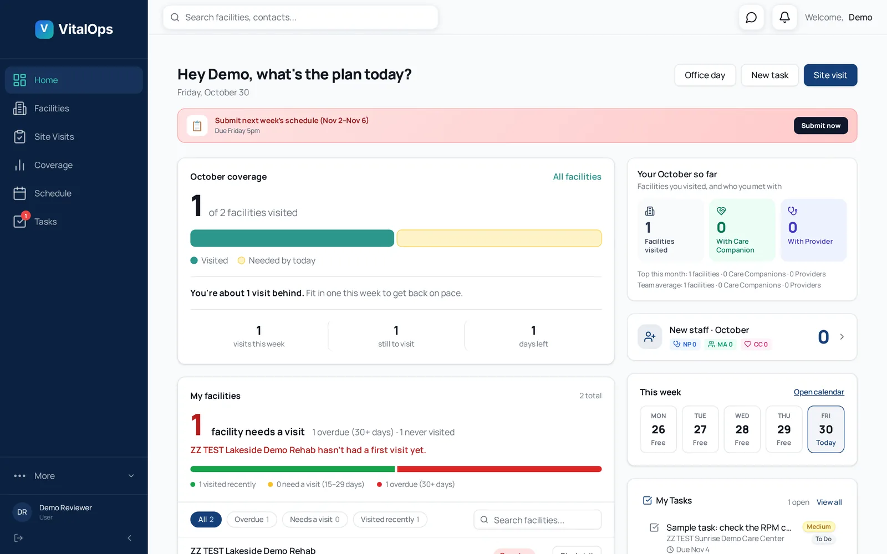
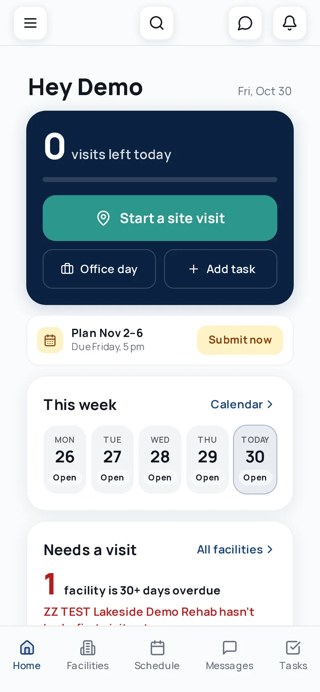
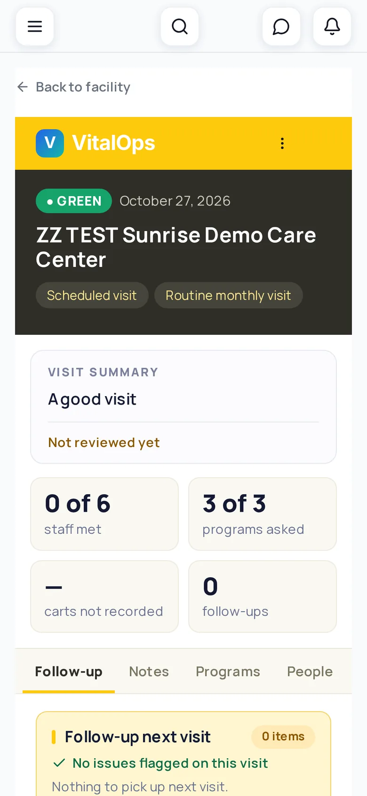
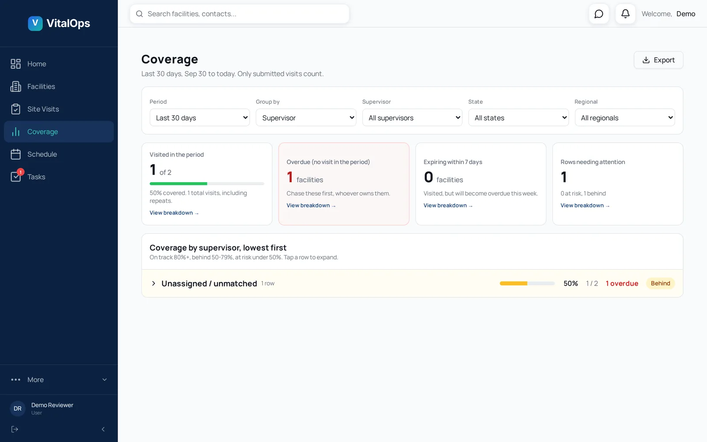
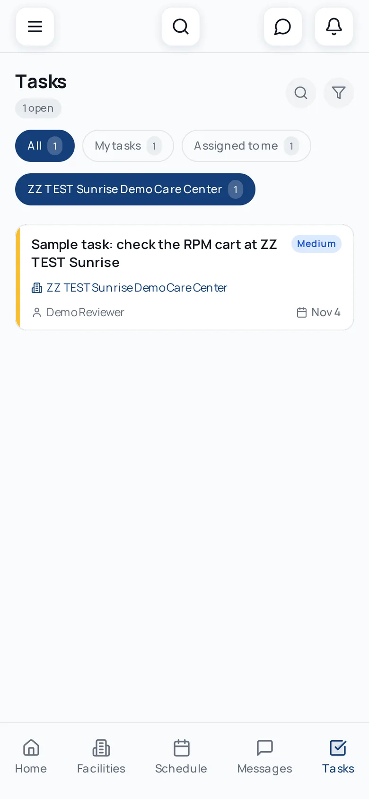
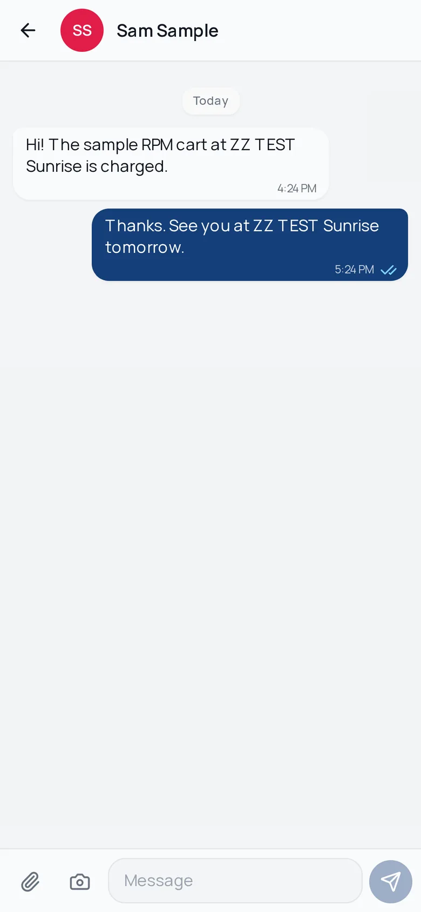
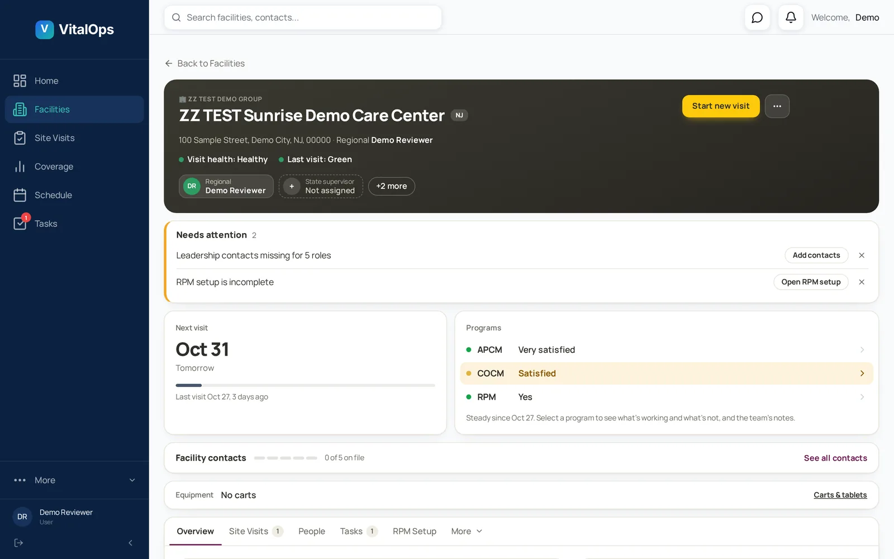

Cuts admin time
Visit reports, schedules and follow-ups are filled in on the phone, on site. No retyping notes at night, no chasing paper.
Field operations for healthcare teams
VitalOps gives home-care, assisted-living and nursing field teams one app for site visits, schedules, tasks, messaging and reports, so managers see what happened in real time and nothing falls through the cracks.


Why teams switch
Replace scattered texts, spreadsheets and paper forms with one shared record of what your field team did, where and when.
Visit reports, schedules and follow-ups are filled in on the phone, on site. No retyping notes at night, no chasing paper.
Every visit, task and schedule change is tied to a person and a time. See who did what, when, and what is still open.
Coverage tracking flags facilities that are overdue for a visit before they feel forgotten, so relationships stay strong.
Capture how each facility rates your programs on every visit. Managers see red flags the moment a report is submitted.
Team chat, @mentions and push notifications live next to the work, so the conversation about a facility stays with the facility.
Structured visit reports, coverage views and exports turn day-to-day field work into clear updates for leadership.
The product
A web dashboard for managers and an iPhone app for the team on the road. Same data, always in sync.
Each person starts the day with their plan: facilities that need a visit, what is overdue, this week's calendar and open tasks. Managers get the same view across their whole team.
A guided visit form captures who you met, program feedback, equipment and follow-ups. Submit it from the phone and it lands on the facility's history instantly, rated green, yellow or red.

Team members plan and submit their week; managers see who is going where. Coverage reports show which facilities were visited in the last 15, 30, 60 or 90 days and who to chase first.

Turn anything from a visit into a task with an owner, a facility, a priority and a due date. Everyone sees what is theirs, and nothing is lost in a text thread.

Direct messages, @mentions on a facility, and notifications when something needs you. On iPhone, push notifications arrive like any text, and you can reply straight from the notification.

Contacts, assigned team, visit history, program feedback, equipment and what changed since the last visit. RPM alert contacts route abnormal-reading alerts to the right people at each facility.

Admins, supervisors and field staff each see what their role allows.
A native app for the team on the road, with push notifications.
Key changes are logged with who made them and when.
Each company sees its own name and logo inside the app.
Pull coverage and visit data out when leadership asks.
See facilities and coverage on a map and plan trips.
How it works
Your own private company space, with your name and logo, and your first admin account.
Invite staff by role and assign them the facilities they cover.
Visits, schedules, tasks and messages happen on the phone, in the field.
Dashboards, coverage and reports update the moment work is submitted.
Multi-company & secure
VitalOps is built to serve many companies at once, with each one walled off from the others.
Users, facilities, visits and messages are separated by company at the database level.
Admins control who can see and change what, down to individual screens.
Encrypted connections, private storage and access controls designed around healthcare privacy rules.
Sensitive actions are recorded, so admins can review who did what.
We'll walk you through the dashboard and the iPhone app and show how it fits your team.
Request a demoDemo booking opens soon.